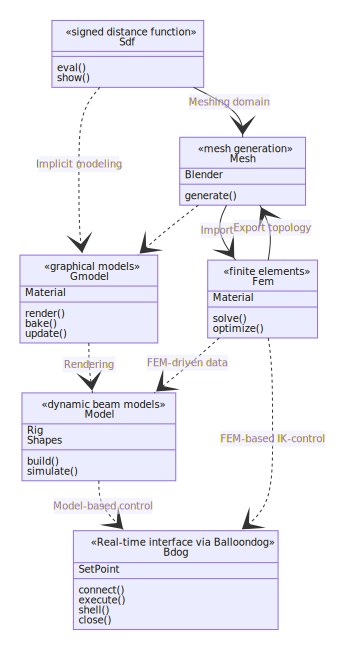

User guide
Table of contents
- SOROTOKI architecture
-
Function documentation
- Installers/main commands
-
Plotting
fig(101)– Generates figure named101fig([64,64])– Generates figure of size 64x64 pix.fig([6,6])– Generates figure of size $2^6$x$2^6$ – 64x64 pix.fig(101,[6,6])– Generates figure named101of size $2^6$x$2^6$ – 64x64 pix.col(n)– get the n-th RBG color for SOROTOKI (n<=10)showcolor(col(1),col(2))– show colorscol(1),col(2).
- Signed Distance Function
SOROTOKI architecture
The software diagram below shows how each class interact. For instance, Sdf can inputted into Mesh, and Mesh can be used for Fem. Then, solving some quasi-static problems, the FEM-driven data can be imported into Model – from which we can develop model-based controllers that can tested using the class Bdog.

Function documentation
Installers/main commands
sorotoki – Main installer
% install toolkit
sorotoki
sorotoki -i
sorotoki install
% version
sorotoki -v
% perform verification routine
sorotoki -c
sorotoki check
% demos
sorotoki -d
sorotoki demo
% uninstall
sorotoki -u
sorotoki uninstall
clr – Clear, close all, and clc
add2path – Add current folder (and subfolders) to path
Plotting
fig(101) – Generates figure named 101
fig([64,64]) – Generates figure of size 64x64 pix.
fig([6,6]) – Generates figure of size $2^6$x$2^6$ – 64x64 pix.
fig(101,[6,6]) – Generates figure named 101 of size $2^6$x$2^6$ – 64x64 pix.
col(n) – get the n-th RBG color for SOROTOKI (n<=10)
showcolor(col(1),col(2)) – show colors col(1), col(2).
Signed Distance Function
Basics
Sdf – Signed distance fnc Class
Sdf.eval(x) – evaluate for points x
fnc = @(x) sqrt((x(:,1)).^2 + (x(:,2)).^2) - 1.0;
sdf = Sdf(fnc,'BdBox',[-1,1,-1,1]);